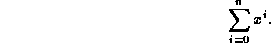
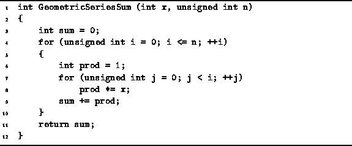
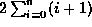
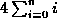
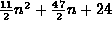
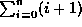
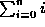
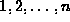

Data Structures and Algorithms
with Object-Oriented Design Patterns in C++
Data Structures and Algorithms
with Object-Oriented Design Patterns in C++In this section we consider the running time of a program to compute the following geometric series summation . I.e., given a value x and non-negative integer n, we wish to compute the summation

An algorithm to compute this summation
is given in Program  .
.

Program: Program to compute 
Table gives the running time,
as predicted by the simplified model,
for each of the executable statements in Program .
| statement | time |
| 3 | 2 |
| 4a | 2 |
| 4b | 3(n+2) |
| 4c | 4(n+1) |
| 6 | 2(n+1) |
| 7a | 2(n+1) |
| 7b |  |
| 7c |  |
| 8 | |
| 9 | 4(n+1) |
| 10 | 2 |
| TOTAL |  |
In order to calculate the total cycle counts,
we need to evaluate the two series summations
 and .
Both of these are
arithmetic series summations .
In the next section we show
that the sum of the series  is n(n+1)/2.
Using this result we can sum the cycle counts
given in Table
to arrive at the total running time of
cycles.
 Copyright © 1997 by Bruno R. Preiss, P.Eng. All rights reserved.
Copyright © 1997 by Bruno R. Preiss, P.Eng. All rights reserved.